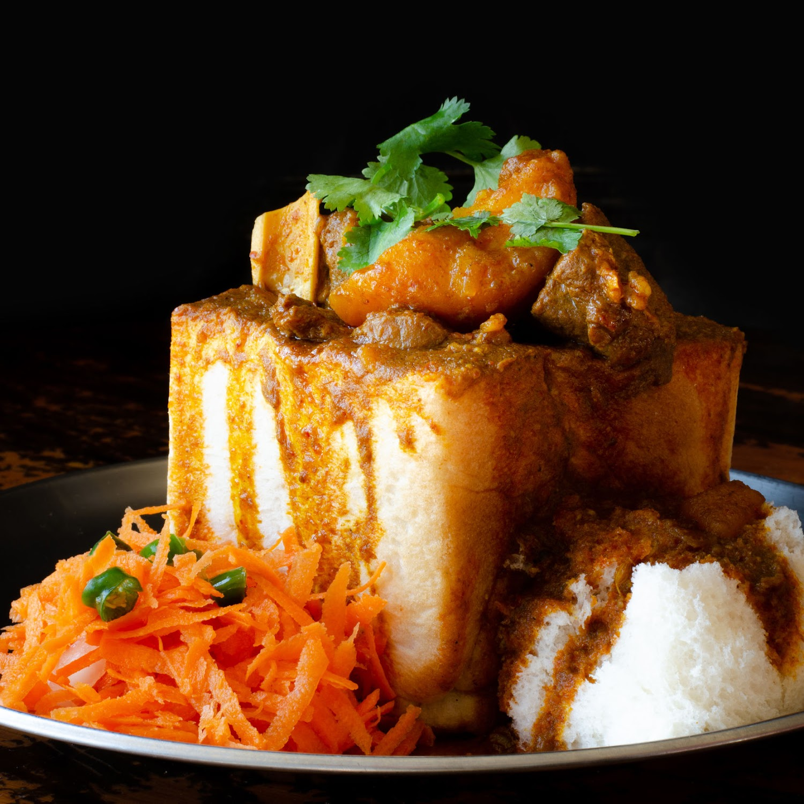

Bunny Chow Recipe

Ingredients
- 1Kg Lamb Pieces
- Oil
- 2 Large Cinnamon Sticks
- 1 Tsp Fennel Seeds
- 1 Bay Leaf
- 6 Green Cardamoms
- 4 Cloves
- A Sprig of Curry Leaves
- 1 Tsp Crushed Green Chillies
- 1/2 Tsp Tumeric
- 2 Tbles Crushed Ginger and Garlic Mix
- 1 Tbles White Vinegar
- 2 Tsp Sugar
- 2 Level Tsp Medium Chilli Powder
- 2 Tsp Coriander/Cumin Powder
- 1 Tsp Garam Masala
- 2 Tomatoes Blended
- 5 Small to Medium Potatoes Quartered
- Shopped Fresh Coriander
- Salt to Taste
Instructions
- Heat oil in pot
- Add cinnamon, cloves, bay leaf and fennel
- Stir
- Add curry leaves, chillies, onion, tumeric, ginger and garlic
- Braise for 3-4 minutes
- Add garam masala and spices to pot. Then vinegar and sugar. mix well
- Add the meat and salt
- Mix until the meat is coated with masala
- Cover saucepan and cook/braise on moderate heat for a few minutes.
- Stir from time to time until meat is well braised. Add potatoes.
- Add water as needed as the curry needs to be quite saucy.
- When potatoes are ¾ cooked add the chopped tomatoes.
- When potatoes are completely soft, stir and add coriander
- Serve with salad
For more information on the recipe click here!